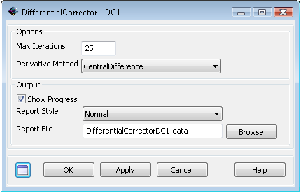

Differential Corrector — A differential corrector.
Create DifferentialCorrectornamename.field=value…
A differential corrector is a numerical solver for solving two-point boundary value problems. The DC in GMAT uses a simple shooting method where the derivatives are determined using finite differencing. In the mission sequence, you use the differential corrector object in a Target sequence to solve two-point value problems. For example, differential correctors are often used to determine the maneuver components required to achieve desired orbital conditions, say, B-plane conditions at a planetary flyby.
You must create and configure a differential corrector object according to your application by setting numerical properties of the solver such as tolerance and maximum iterations. You can also select among different output options that show increasing levels of information for each differential corrector iteration.
The allowable settings for a differential corrector are shown in the GUI screen shots and reference table below. You can learn more about how to use a DC in a targeting sequence by reading the help files for Target, Vary, and Achieve.
MaximumIterations | The MaximumIterations field allows the user to set the maximum number of iterations the differential corrector is allowed during the attempt to find a solution. If the maximum iterations is reached, GMAT exits the target loop and continues to the next command in the mission sequence. In this case, the objects retain their states as of the last nominal pass through the targeting loop.
| ||||||
DerivativeMethod | The DerivativeMethod field allows the user to choose between one-sided and central differencing for numerically determining the Jacobian matrix.
| ||||||
ShowProgress | When the ShowProgress field is set to true, then data illustrating the progress of the differential correction process are written to the message window. The message window is updated with information on the current control variable values and the contraint variances for both on perturbation and iteration passes. When the ShowProgress field is set to false, no information on the progress of the differential correction process is displayed.
| ||||||
ReportStyle | The ReportStyle field allows the user to control the amount and type of information written to the file defined in the ReportFile field. Currently, the Normal and Concise options contain the same information: the Jacobian, the inverse of the Jacobian, the current values of the control variables, and achieved and desired values of the constraints. Verbose contains values of the perturbation variables in addition to the data for Normal and Concise. Debug contains detailed script snippets at each iteration for objects who have control variables.
| ||||||
ReportFile | The ReportFile field allows the user to specify the path and file name for the differential correction report.
|
The Differential Corrector does not interact directly with any resource objects.
The Differential Corrector is used in the following mission sequence commands:
Target
Vary
Achieve
|  |
Figure: Default Name and Settings for the Differential Corrector Dialog Box
Create DifferentialCorrector DefaultDC;
GMAT DefaultDC.ShowProgress = true;
GMAT DefaultDC.ReportStyle = 'Normal';
GMAT DefaultDC.TargeterTextFile = 'DifferentialCorrectorDefaultDC.data';
GMAT DefaultDC.MaximumIterations = 25;
GMAT DefaultDC.UseCentralDifferences = false;